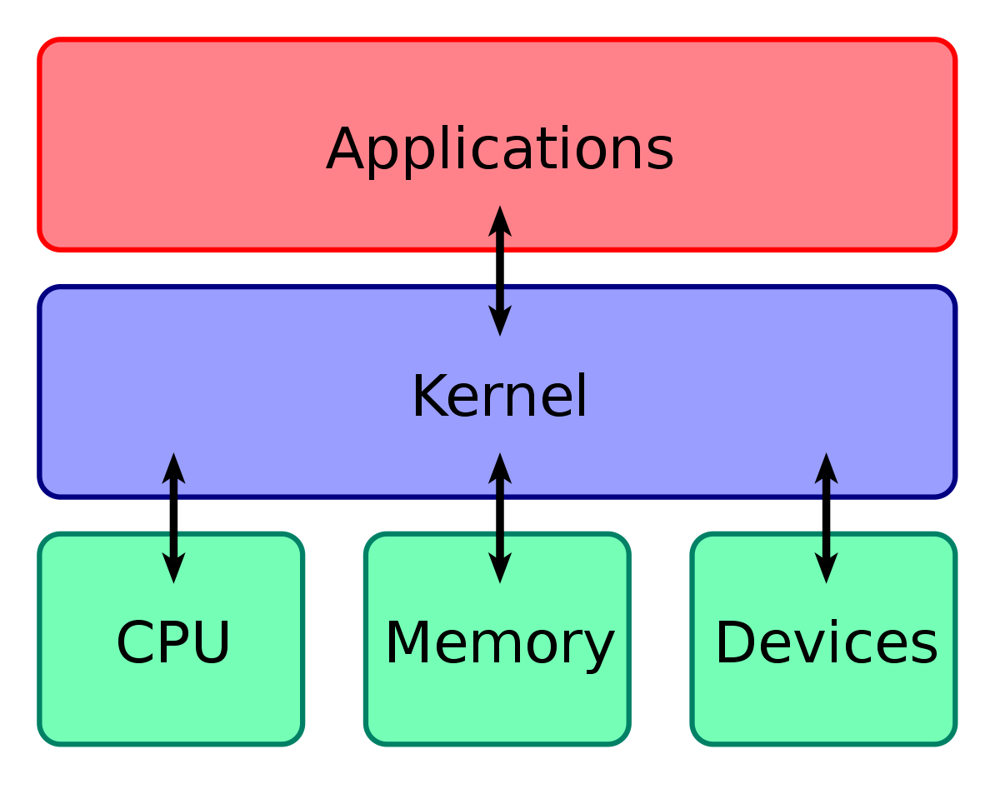
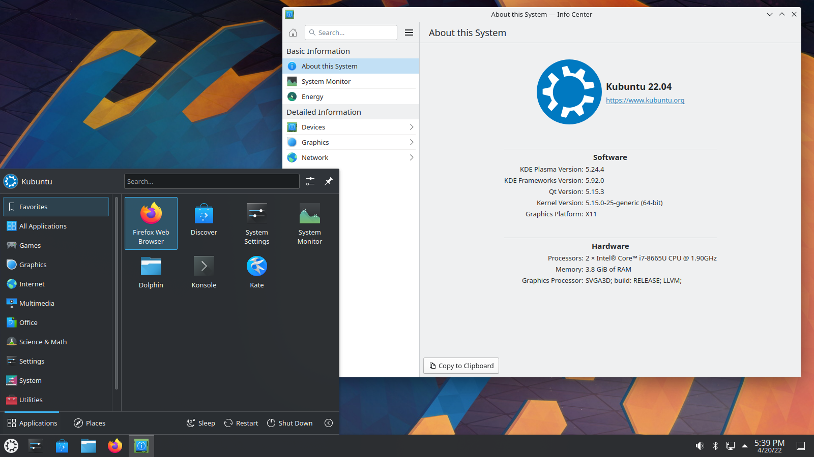
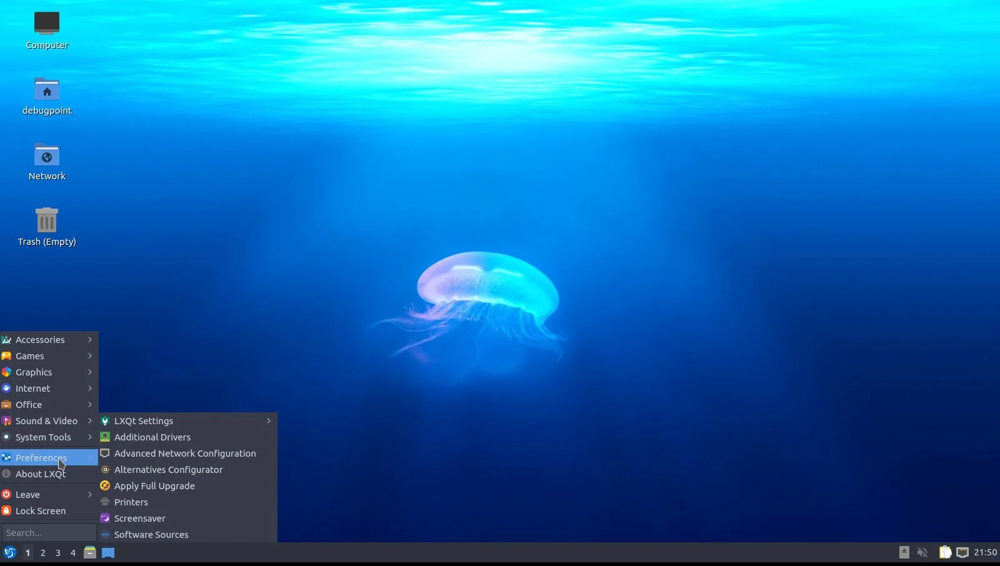
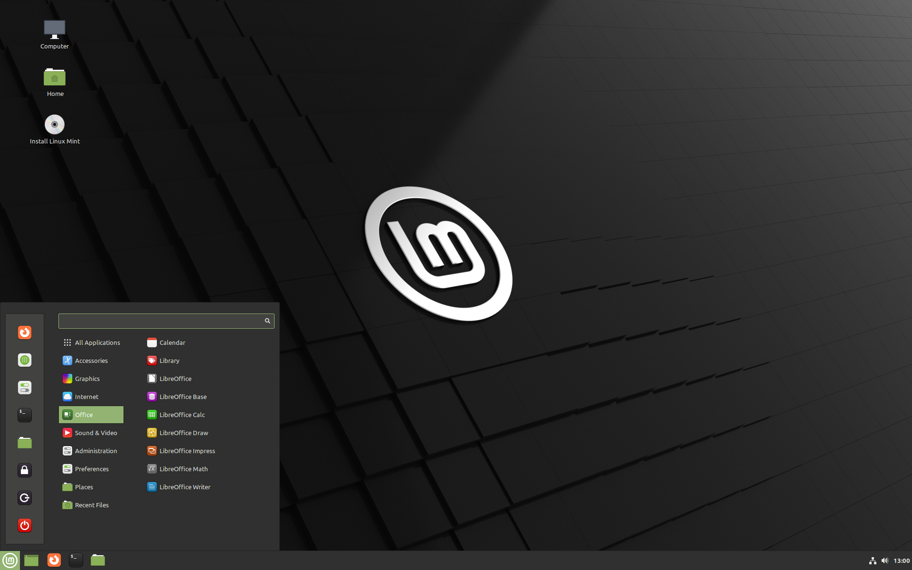
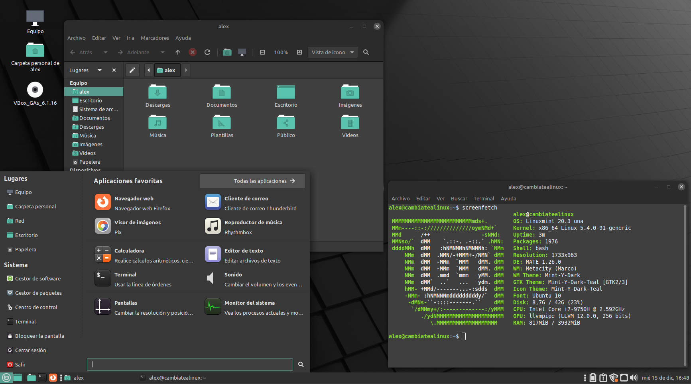

1. Arquitectura, distribuciones y entornos de escritorio
GNU/Linux es la base de muchos sistemas operativos de código abierto. GNU/Linux no es un sistema operativo completo, sino una serie de programas y herramientas con un núcleo (kernel) que comparten muchos sistemas operativos (OpenSuse, Ubuntu, Linux Mint, Debian, etc.). Los nombres más importantes detrás de GNU/Linux son Richard Stallman y Linus Torvalds.
1.1 Conceptos básicos
1.1.1 Interfaces de usuario
Existen varios términos para describir interfaces gráficas:
- UI: User Interface (en español IU: Interfaz de Usuario). Lo que ves en tu ordenador ahora mismo se llama GUI (Interfaz gráfica de usuario o Graphical User Interface). Los terminales de comandos.
- GUI: Graphical User Interface o interfaz gráfica de usuario.
La diferencia es que la G (graphical) indica que es una interfaz en modo gráfico y no en modo texto. En sistemas basados en Linux existen diferentes interfaces gráficas: GNOME, KDE, XFCE, LXDE, Cinnamon, MATE...
1.1.2 Arquitectura del sistema
|  |
|---|
| Imagen obtenida de: Wikipedia |
1.1.2.1 Kernel (núcleo)
Podemos imaginarnos el kernel como un programa en la parte más profunda del sistema operativo y que se ocupa de la interactuación con el hardware (procesador, disco duro, ram...).
Cuando desde un terminal ejecutamos un comando, el kernel lo recibe y se ocupa de interactuar con el hardware.
Aunque muchas veces trata a las distribuciones (Ubuntu, Fedora, Linux Mint, ArchLinux...) como "Linux" a secas, realmente Linux es el kernel o núcleo y todos esos nombres son distribuciones diferentes que usan ese kernel.
Cuando decimos que vamos a "instalar un Linux", nos solemos referir a que vamos a instalar una distribución que usa el núcleo creado por Linus Torvalds en 1991 (y al que denominó como Linux). El sistema operativo de muchos smartphones (Android) usa una versión modificada de Linux.
1.1.2.2 Shell
El Shell estaría, en la imagen, entre las aplicaciones y el Kernel. Un Shell hace de interfaz entre los usuarios y el sistema operativo.
La interfaz gráfica de Windows y las distintas disponibles en GNU/Linux son también Shells, al igual que muchas por comandos como: bash, sh, zsh...
1.1.2.2.1 Tipos de shells en Linux
- Gnome, KDE (y otras GUIs): los comandos realmente se ejecutan, pero se hace mediante clicks en diferentes sitios, arrastrando y soltando, etc. Aún así, estos son también shells.
- Shells de línea de comandos:
- SH (Bourne Shell): es una de las shells más antiguas de Linux.
- BASH (Born Again Shell): tiene muchas mejoras sobre la anterior y es la que viene por defecto en GNU/Linux.
- CSH y TCSH: no suelen utilizarse salvo que tengas mucho control sobre lenguajes de programación C y C++.
- KSH (Korn Shell): muy utilizada en Solaris.
- ZSH y Fish: de las más interesantes hoy en día. Si piensas usar Linux de forma habitual en escritorio mi recomendación es que intentes instalar una de estas dos para mejorar la experiencia en terminal.
Si consultas el fichero /etc/shells puedes ver la lista de shells que tienes instaladas en el sistema.

1.1.2.3 Aplicaciones
Una aplicación puede ejecutarse por interfaz gráfica, pero también por terminal de comandos.
Muchas aplicaciones gráficas lo que hacen realmente (al pulsar, por ejemplo, un botón) es ejecutar comandos en un shell concreto. Este shell, a su vez, interactúa con el Kernel que a su vez lo hace con el hardware. Así es como se produce toda la comunicación entre las capas.
Si ejecutamos, por ejemplo, una aplicación (imaginemos Steam), esa aplicación se ejecuta en un Shell, el cuál a su vez se comunica con el Kernel y este finalmente con el hardware. Hay una comunicación completa desde el usuario hasta el hardware.
1.1.2.4 Sistema operativo
La combinación del Kernel, el Shell y los programas a más bajo nivel es lo que forma el sistema operativo.
1.2 Distribuciones GNU/Linux y entornos de escritorio
Existen múltiples distribuciones basadas en Linux con diferentes características (Debian, OpenSuse, Ubuntu, Linux Mint, Zorin OS, Fedora, Archilinux, etc.). Además, cada una de estas distribuciones se puede usar con diferentes entornos de escritorio (puedes imaginarte unos más parecidos al estilo de Windows, otros más parecidos a MacOS y otros diferentes a ambos).
Las distribuciones GNU/Linux más habituales y más “beginner friendly” son las basadas en Ubuntu. Las versiones más habituales de Ubuntu son las siguientes:
- Ubuntu con entorno de escritorio “Gnome” (denominado como Ubuntu) .
- Ubuntu con entorno de escritorio “KDE” (denominado como Kubuntu).
Para ordenadores antiguos o con muy pocos recursos:
- Ubuntu con entorno de escritorio “XFCE” (Xubuntu).
- Ubuntu con entorno de escritorio “LXDE” (Lubuntu).
A continuación se muestran imágenes de distintos sistemas operativos y entornos de escritorio:
 |
|---|
| Ubuntu con GNOME (Ubuntu) |
|  |
|---|
| Ubuntu con KDE (Kubuntu) |
|  |
|---|
| Ubuntu con LXDE (Lubuntu) |
|  |
|---|
| Linux Mint (distribución basada en Ubuntu) con entorno de escritorio Cinnamon |
|  |
|---|
| Linux Mint con entorno de escritorio denominado MATE |
 |
|---|
| Zorin OS (distribución basada en Ubuntu y Windows friendly). Tiene un entorno de escritorio GNOME adaptado por ellos mismos para hacerlo más familiar a Windows. |
Como veis, es posible tener el mismo sistema operativo con diferente entorno de escritorio. GNOME, KDE, XFCE, Cinnamon, MATE o LXDE son entornos de escritorio diferentes.
Iniciarse en GNU/Linux: si quieres iniciarte en GNU/Linux en uso personal usar Ubuntu o una distribución basada en Ubuntu es la mejor opción. Mis recomendaciones para empezar: Ubuntu (el normal con Gnome), Linux Mint (Cinnamon) o Zorin OS.
Algunos sistemas operativos o entornos de escritorio en GNU/Linux consumen muy pocos y están preparados para dar una segunda vida a ordenadores antiguos. Si quieres dar una segunda vida a un ordenador antiguo sigue este enlace.
1.3 GNU/Linux en servidores
Algunos usuarios habituales de Linux son los siguientes:
- Gobierno de los Estados Unidos y algunas de sus agencias (nacional, estatal, federal e internacional).
- NASA: no solo lo utilizan para la mayor parte de su computación, sino que además contribuyen al código.
- Hospitales
- Red de trenes de alta velocidad de Japón (bullet trains).
- Control de tráfico.
- Institutos financieros.
- Liders de comercio online (Amazon, Paypal, Ebay o Walmart.
- Muchas otras compañías (Google, IBM, Facebook, Mcdonals...).
Dentro de las versiones de GNU/Linux en entornos empresariales destacan las siguientes:
- Redhat.
- CentOS: administrado también por Redhat y totalmente gratuito. No recibe soporte técnico de Redhat.
- Fedora Server: gratuito.
- Suse Linux Enterprise Server: pertenece a la compañía Novell. VMWare utiliza Suse como entorno.
- Debian.
- Ubuntu Server.